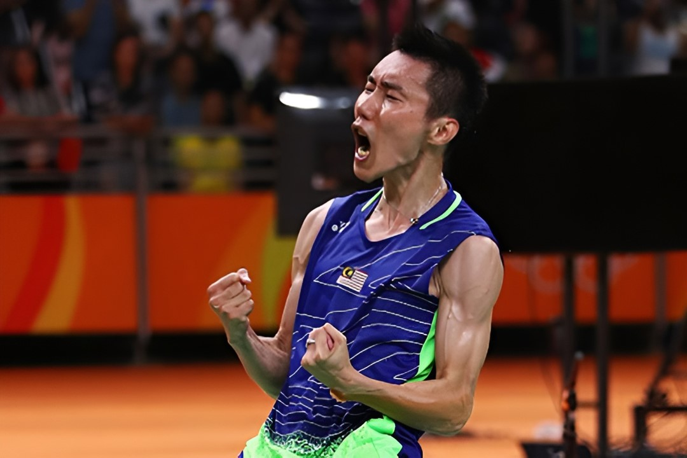

Dato' Lee Chong Wei, a Malaysian Chinese athlete, was born in Nan'an County, Fujian Province, and was born in Perak, Malaysia. He is a retired badminton men's singles player, known as "Malaysian Badminton Brother". He also held the world No. 1 position in the men's singles for 349 weeks, the longest record in badminton.
Lee Chong Wei became the sixth Malaysian athlete to win a medal at the Olympics and was awarded the Dato's honor. In 2012, he once again lost to Lin Dan in the London Olympics badminton men's singles to win the silver medal. In 2016, he won the silver medal in the men's singles badminton competition for the third time at the Rio Olympics, and was awarded the title of Datuk Wira.
Lee Chong Wei's netball very good. When we think that the ball is scored by the opponent, but Lee Chong Wei has his unique tricks to hit the ball back.
Lee Chong Wei's defense is also very strong. In particular, his diving saves can save the ball to a position that is particularly close to the net.